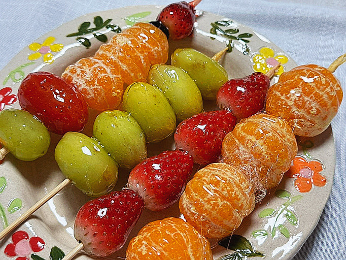

새콤달콤한 탕후루

안녕하세요! 최근 우리나라에서 유행했던 디저트에 대해서 소개합니다.
그것은 바로 길거리에서 흔히 볼 수 있었던 탕후루인데요.
상큼한 과일에 설탕옷을 입혀 더욱 달콤하게 만든 디저트입니다.
맛있지만 매번 사먹기엔 부담스러운 가격이 아닐까 생각하는데요!
그래서 탕후루를 집에서 만드는 방법을 소개합니다.
탕후루 만드는 방법 및 순서
다양한 과일을 적당한 크기로 준비합니다.
팬에 설탕과 물을 넣고
설탕이 완전히 녹을 때까지
저어주세요.
기호에 따라 설탕을 조절
하여 시럽의 당도를 조절해주세요.
준비한 과일을 만들어진
시럽에 골고루 발라주세요.
시럽이 골고루 발린 탕후루를 그대로 냉장고에 넣어주세요.
차갑게 식히면 맛있는 탕후루가 완성됩니다!
생크림이나 아이스크림
과함께 먹으면 더욱 맛있어요.
© 박상필